Intro To Github Pages & HTML
Hi all,
Have you ever wanted a unique way to share your code, projects, repositorys and portfolio?
How about wanting a "website" but not necessarily wanting to pay the maintenance and hosting fees?
Well today we will look at how you can set up with a github HTML template to showcase your work.
First you'll want to log in to Github.
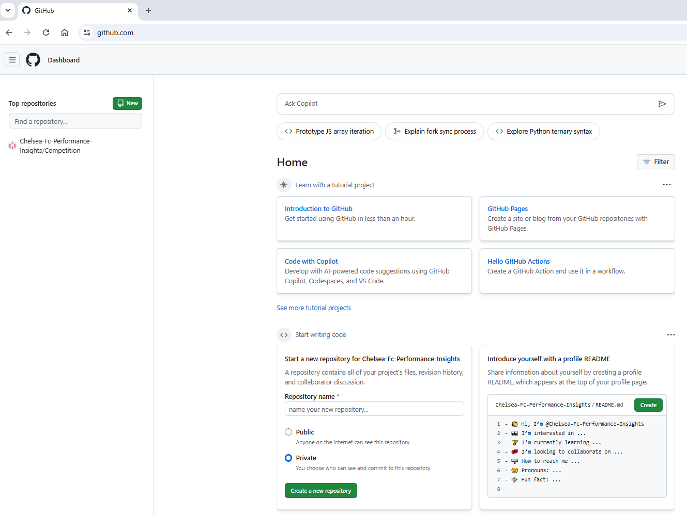
& we can straight away make a repository. You'll need to make it public. That's okay though as for now it doesn't have anything in it!
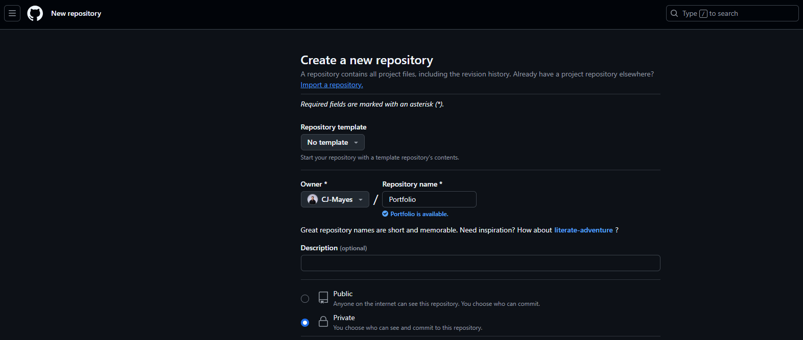
For this run through we will create a HTML site. Google "Free HTML Templates" .... there are a ridiculous amounts online.
Here are a few sites:
https://html5up.net/
https://onepagelove.com/templates/free-templates
https://htmlrev.com/free-html-templates.html
It will comprise generally of:
a css folder, images folder, js and most importantly an index.html file.
If you want to follow along with the template I used it was found here.
 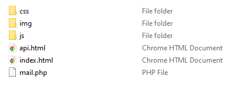
You can add these files directly into the repo, by dragging them from the folder and onto the page.
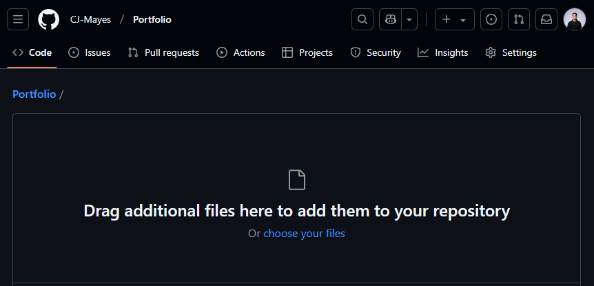
Personally I think its a good idea to open an IDE of your choosing and login then clone these files into your repository instead.
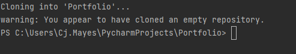
Push all these files into the repository.
That will be your template created.
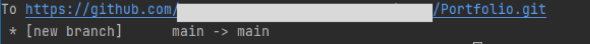
Next thing we want to turn the page on.
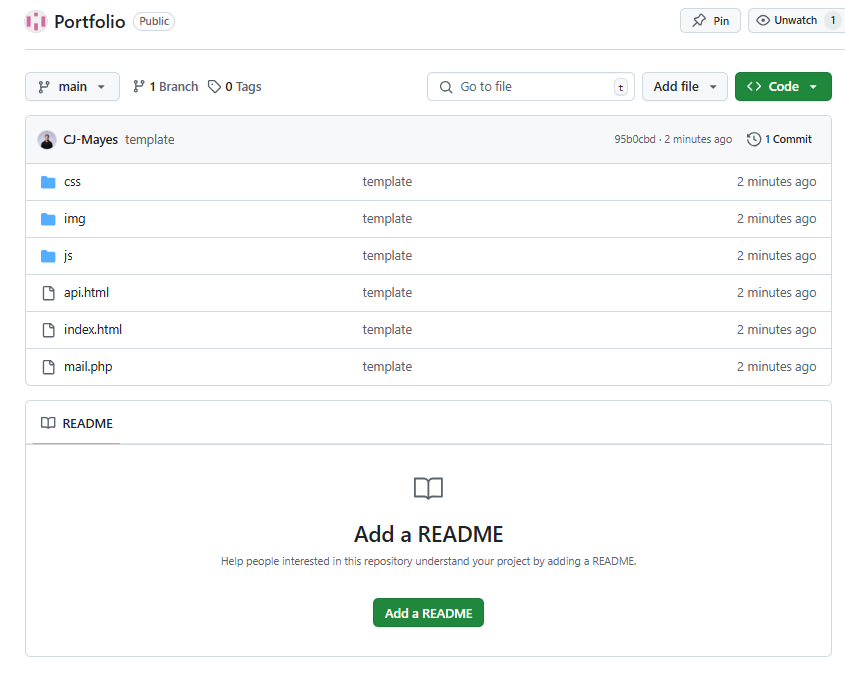
Go to settings and Github pages.
Switch it to Github actions.
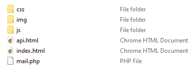
You can add these files directly into the repo, by dragging them from the folder and onto the page.
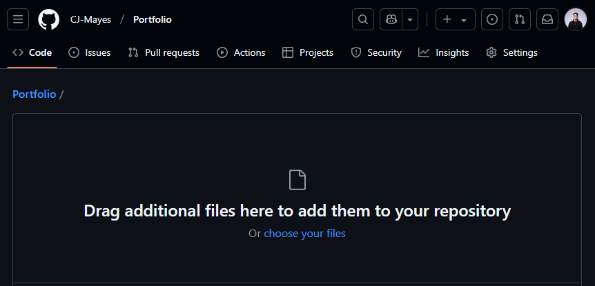
Personally I think its a good idea to open an IDE of your choosing and login then clone these files into your repository instead.
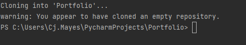
Push all these files into the repository.
That will be your template created.
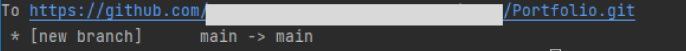
Next thing we want to turn the page on.
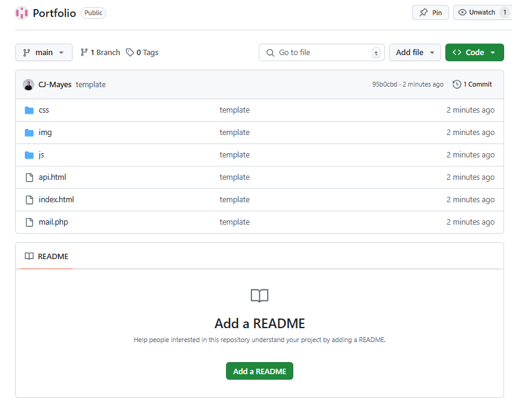
Go to settings and Github pages.
Switch it to Github actions.
 For the time being we will look to use a static HTML template.
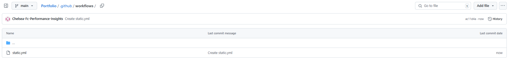
The YML file will trigger the github actions to load the HTML page template we created.
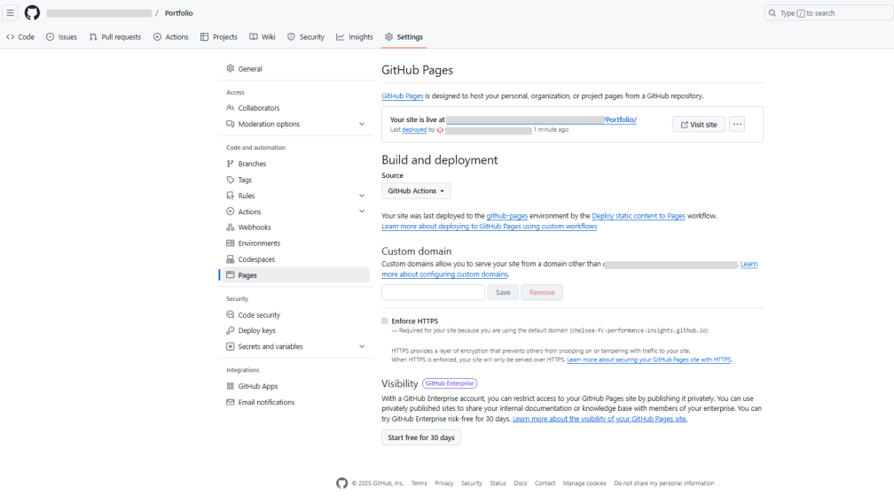
With that file created we can go back to pages and see the site is live.
Click your custom link.
For now it will be your github name / Portfolio. Of course you can amend this url as you see fit.
For the time being we will look to use a static HTML template.
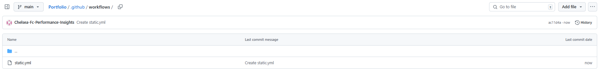
The YML file will trigger the github actions to load the HTML page template we created.
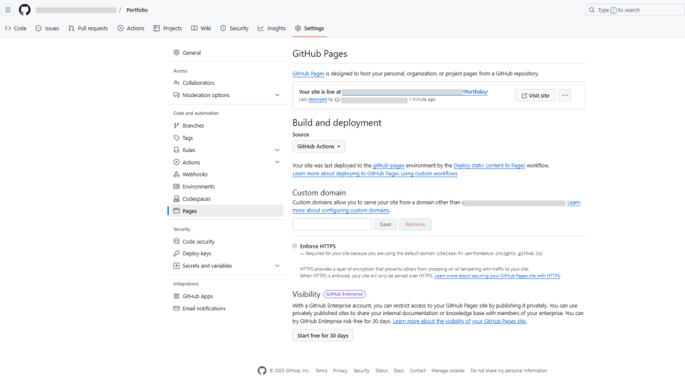
With that file created we can go back to pages and see the site is live.
Click your custom link.
For now it will be your github name / Portfolio. Of course you can amend this url as you see fit.
 So that is us set up!
But now we need to know how to
1. Update elements and items in the template itself now its live.
2. Know how to test locally before publishing live.
A static HTML site typically includes an index.html file, along with img, css, and js folders. Here's what each of these elements does:
The index.html file serves as the main entry point for your website. It contains the structure and content of your homepage, using HTML tags to define headings, paragraphs, links, and other elements. When someone visits your site's root URL, this is usually the first page they see.
The img folder is where you store all the images used on your website. This includes photographs, logos, icons, and any other graphics. Keeping images in a separate folder helps organize your site's assets and makes it easier to reference them in your HTML and CSS files.
The css folder contains your Cascading Style Sheets. These files define the visual appearance of your HTML elements, including colors, fonts, layouts, and responsive design rules. Separating your CSS from your HTML helps maintain a clean structure and makes it easier to update your site's design.
The js folder houses your JavaScript files. These add interactivity and dynamic behavior to your otherwise static HTML pages. JavaScript can be used for form validation, creating animations, updating content without reloading the page, and much more.
This structure helps keep your site organized and makes it easier to maintain and update over time. It's a common and effective way to set up a static HTML site.
Lets take a look at the simplist example for now.
In the Index file you'll see a header. In the case of this template it reads "Creative Branding"
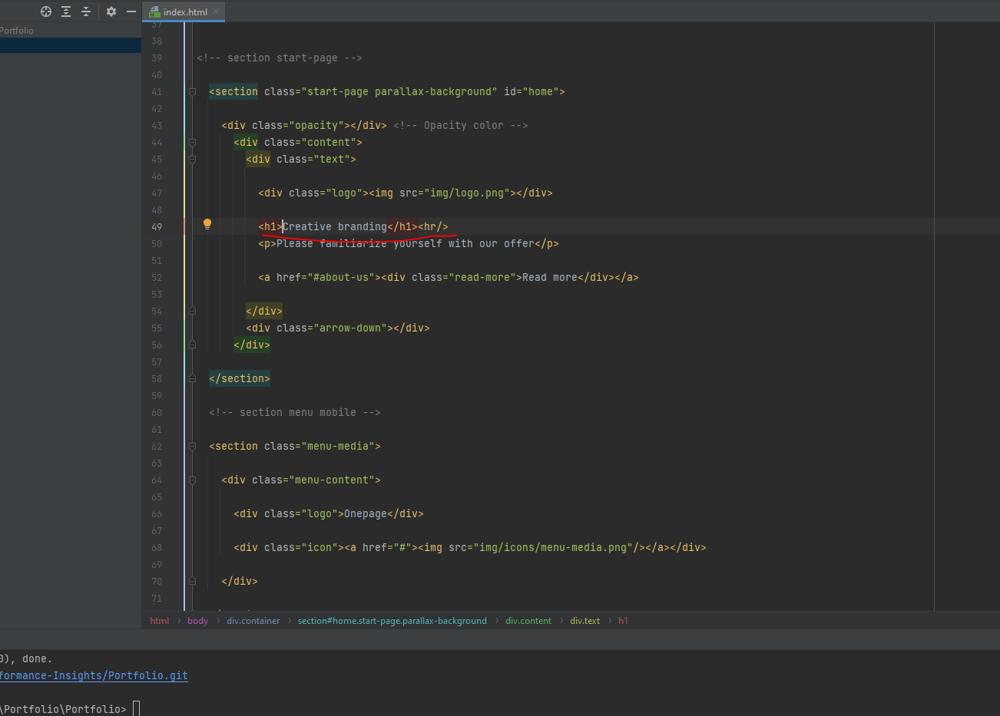
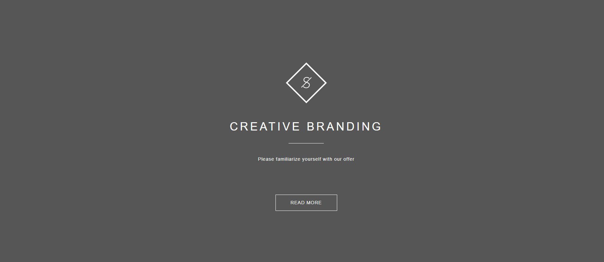
We can of course up date that, and repush our code to the repo.
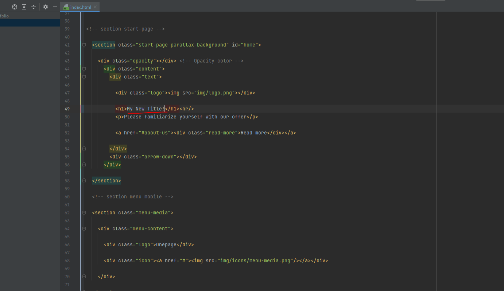
Now thats all well and good as we can see the changes.... but this would take us forever and a million commits to get any work done.
So lets actually test this locally before we publish it up to our repo.
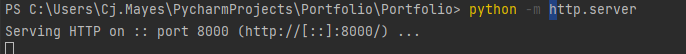
So that is us set up!
But now we need to know how to
1. Update elements and items in the template itself now its live.
2. Know how to test locally before publishing live.
A static HTML site typically includes an index.html file, along with img, css, and js folders. Here's what each of these elements does:
The index.html file serves as the main entry point for your website. It contains the structure and content of your homepage, using HTML tags to define headings, paragraphs, links, and other elements. When someone visits your site's root URL, this is usually the first page they see.
The img folder is where you store all the images used on your website. This includes photographs, logos, icons, and any other graphics. Keeping images in a separate folder helps organize your site's assets and makes it easier to reference them in your HTML and CSS files.
The css folder contains your Cascading Style Sheets. These files define the visual appearance of your HTML elements, including colors, fonts, layouts, and responsive design rules. Separating your CSS from your HTML helps maintain a clean structure and makes it easier to update your site's design.
The js folder houses your JavaScript files. These add interactivity and dynamic behavior to your otherwise static HTML pages. JavaScript can be used for form validation, creating animations, updating content without reloading the page, and much more.
This structure helps keep your site organized and makes it easier to maintain and update over time. It's a common and effective way to set up a static HTML site.
Lets take a look at the simplist example for now.
In the Index file you'll see a header. In the case of this template it reads "Creative Branding"
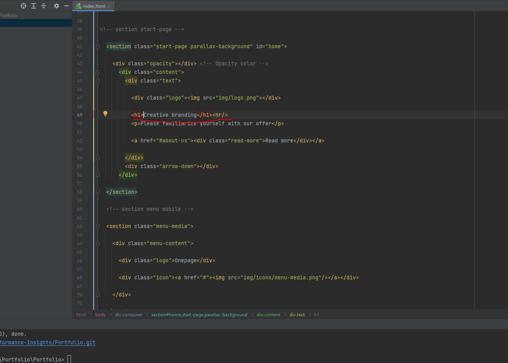
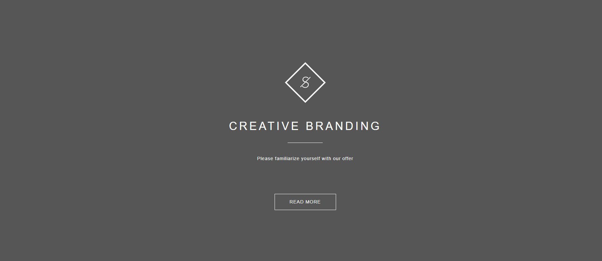
We can of course up date that, and repush our code to the repo.
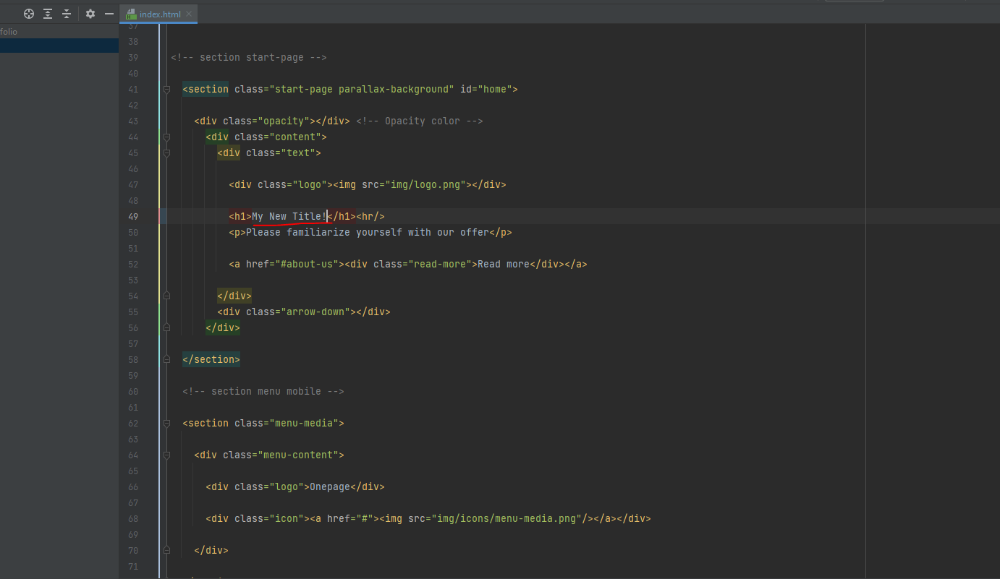
Now thats all well and good as we can see the changes.... but this would take us forever and a million commits to get any work done.
So lets actually test this locally before we publish it up to our repo.
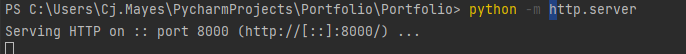
python -m http.server
Start the local server in your terminal.
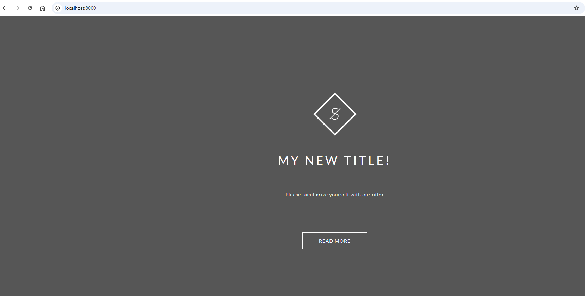
Now you can amend your files as you see fit, before you push them live to your repository.
To push your edited files live generally follow the below commands.
git status: This command shows you the current state of your working directory and staging area. It tells you which files have been modified, which are staged for commit, and which are untracked. It's a good way to get an overview of your changes before committing.
Git status
git add: This command stages changes for commit. You can add specific files (git add filename) or all changes (git add .). Staging allows you to choose which changes you want to include in your next commit. It's like preparing a package before sending it.
Git add .
git commit: This creates a new commit with the changes you've staged. A commit is like a snapshot of your project at a specific point in time. You typically include a message describing the changes: git commit -m "Your commit message here". This helps you and others understand what changes were made and why.
Git commit -m "adding my new title to the index.html"
git push: This command uploads your local commits to a remote repository, often on platforms like GitHub or GitLab. It's how you share your changes with others or update the central version of your project. The basic form is git push origin branch-name, where 'origin' is the default name for the remote repository and 'branch-name' is the branch you're pushing.
Git push
These commands are often used together in a workflow:
- Make changes to your files
- Check status with git status
- Stage changes with git add
- Commit changes with git commit
- Push changes to the remote with git push
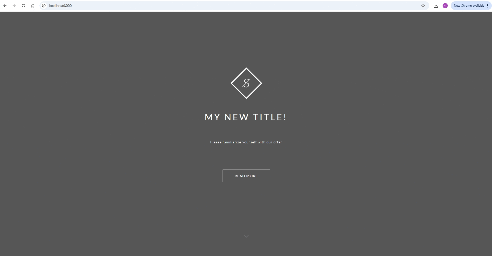
Thats our whistlestop tour to creating a github 1 pager from a template.
Going further.
- Use a template of your choosing.
- Update some of the titles and headers.
- Amend the style of the page.
- Add in your images to the portfolio page.
- Create a custom url for the github page.
LOGGING OFF,
CJ